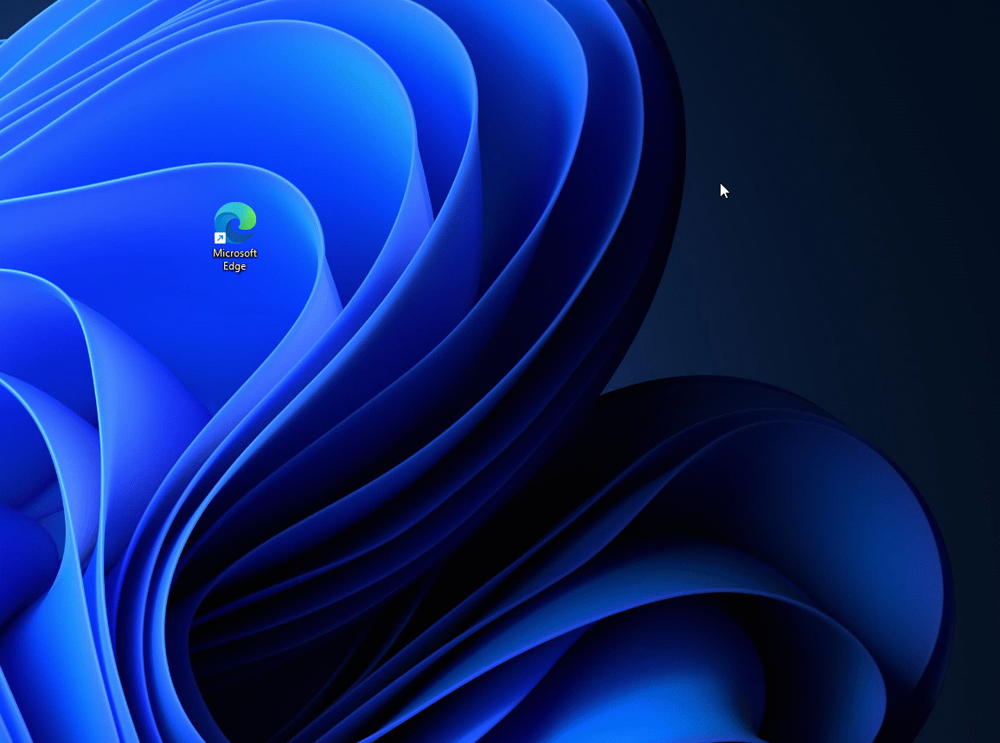
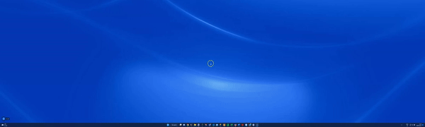
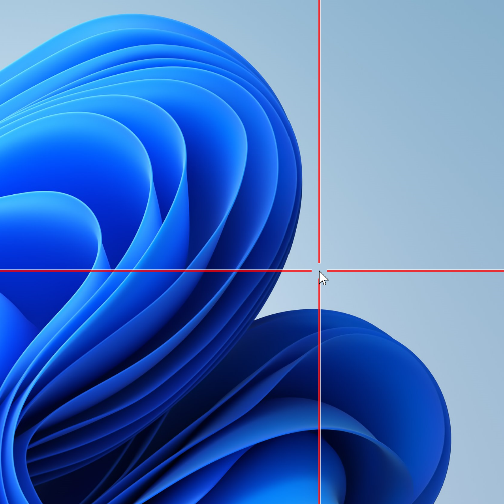

Mouse utilities
Mouse utilities in PowerToys is a collection of features that enhance mouse and cursor functionality on Windows. These utilities help you locate your cursor, highlight mouse clicks, jump across screens, and display crosshairs for improved precision and productivity.
Find my mouse
Activate a spotlight that focuses on the cursor's position by pressing the Ctrl key twice, using a custom shortcut, or by shaking the mouse. Click the mouse or press any keyboard key to dismiss it. If you move the mouse while the spotlight is active, the spotlight will dismiss on its own shortly after the mouse stops moving.

Settings
From the settings page, the following options can be configured:
| Setting | Description |
|---|---|
| Activation method | Choose between Press Left Ctrl twice, Press Right Ctrl twice, Shake mouse or Custom shortcut. |
| Minimum distance to shake | Adjust sensitivity. |
| Activation shortcut | The custom shortcut used to activate the spotlight. |
| Do not activate when Game Mode is on | Prevents the spotlight from being used when actively playing a game on the system. |
| Overlay opacity | The opacity of the spotlight backdrop. (default: 50%) |
| Background color | The color of the spotlight backdrop. (default: #000000) |
| Spotlight color | The color of the circle that centers on the cursor. (default: #FFFFFF) |
| Spotlight radius | The radius of the circle that centers on the cursor. (default: 100px) |
| Spotlight initial zoom | The spotlight animation's zoom factor. Higher values result in more pronounced zoom animation as the spotlight closes in on the cursor position. |
| Animation duration | Time for the spotlight animation. (default: 500ms) |
| Excluded apps | Add an application's name, or part of the name, one per line (e.g. adding Notepad will match both Notepad.exe and Notepad++.exe; to match only Notepad.exe add the .exe extension). |
Mouse Highlighter
Display visual indicators when the left or right mouse buttons are clicked. By default, mouse highlighting can be turned on and off with the Win+Shift+H shortcut.
Settings

From the settings page, the following options can be configured:
| Setting | Description |
|---|---|
| Activation shortcut | The customizable keyboard command to turn mouse highlighting on or off. |
| Primary button highlight color | The highlighter color for the user's primary mouse button. |
| Secondary button highlight color | The highlighter color for the user's secondary mouse button. |
| Always highlight color | The highlighter color for the mouse pointer. |
| Highlight mode | Determines how the cursor is highlighted. Spotlight dims the screen to spotlight the cursor. Circle highlight highlights the cursor with a circle, while keeping the rest of the screen unaffected. |
| Radius | The radius of the highlighter - Measured in pixels. |
| Fade delay | How long it takes before a highlight starts to disappear - Measured in milliseconds. |
| Fade duration | Duration of the disappear animation - Measured in milliseconds. |
Mouse jump

Mouse jump allows moving the mouse pointer long distances on a single screen or across multiple screens.
| Setting | Description |
|---|---|
| Activation shortcut | The customizable keyboard command to activate the mouse jump. |
| Thumbnail Size | Constrains the thumbnail image to a maximum size. The default size is 1600x1200 pixels. |
| Appearance | Expand this section to adjust the popup appearance by customizing the colors, borders, spacing, and more. |
Mouse pointer Crosshairs

Mouse Pointer Crosshairs draws crosshairs centered on the mouse pointer.
| Setting | Description |
|---|---|
| Activation shortcut | The customizable keyboard command to turn mouse crosshairs on or off. |
| Color | The color for the crosshairs. |
| Opacity | (default: 75%) |
| Center radius | (default: 20px) |
| Crosshairs thickness | (default: 5px) |
| Border color | The color for the crosshair borders. |
| Border size | Size of the border, in pixels. |
| Automatically hide crosshairs when the mouse pointer is hidden | |
| Fix crosshairs length | |
| Crosshairs fixed length (px) |
Install PowerToys
This utility is part of the Microsoft PowerToys utilities for power users. It provides a set of useful utilities to tune and streamline your Windows experience for greater productivity. To install PowerToys, see Installing PowerToys.